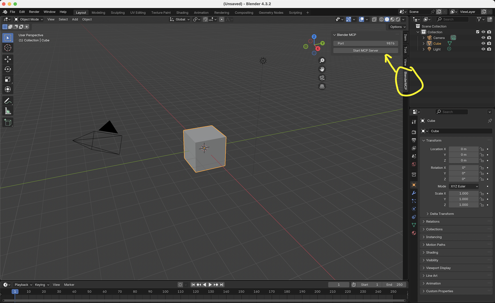
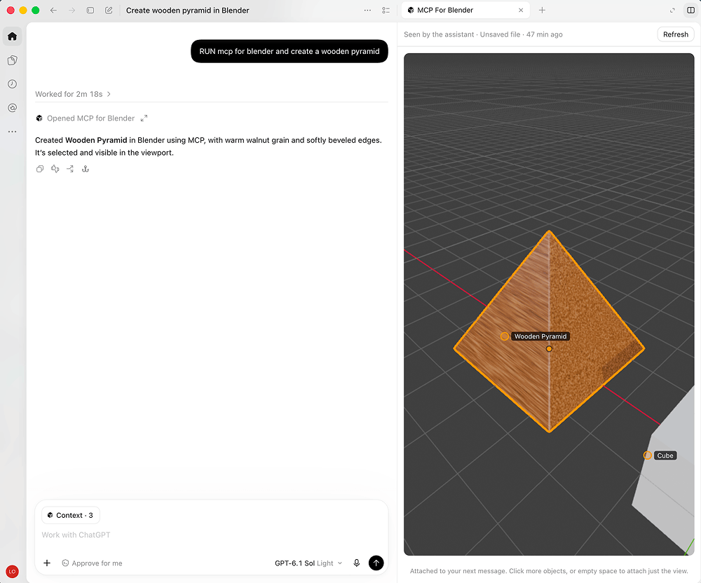
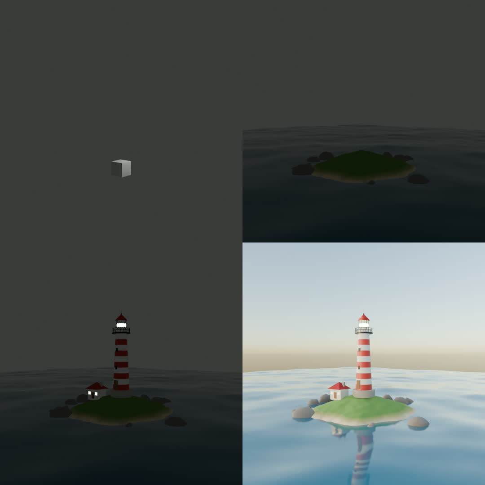
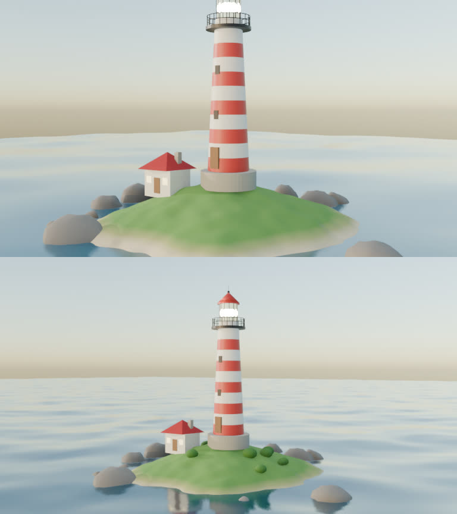
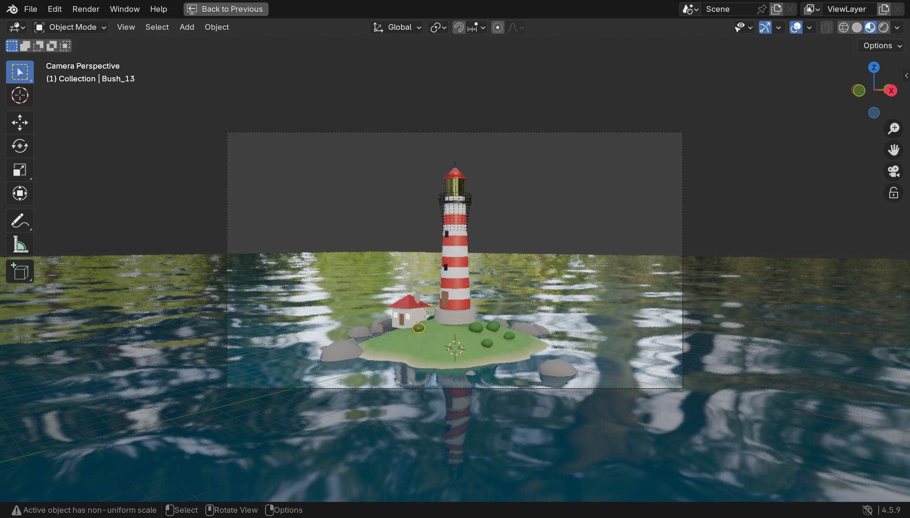

MCP for Blender는 클로드(Claude Desktop·Claude Code)나 코덱스, 커서 같은 AI 앱에 블렌더를 연결해 주는 무료 오픈소스(MIT)예요. 연결하면 AI가 블렌더 안에서 직접 코드를 돌려 물체·재질·조명·카메라를 만들고, 스스로 화면을 찍어 보며 고쳐요. ※ 블렌더 재단이 만든 공식 도구가 아니에요(커뮤니티 플러그인). 블렌더 재단의 공식 MCP(Blender Lab)는 따로 있어요. 아래 '처음부터 끝까지 예시'는 저희가 직접 돌려 본 결과예요. 사진 한 장으로 장면 짓기는 공식 데모 기준이에요.
윈도우는 PowerShell, 맥·리눅스는 터미널에서 '복사해서 쓰기'의 설치 명령을 실행해요. PC에 있는 AI 앱(Claude Desktop·Claude Code·Codex·Cursor·VS Code 등)을 찾아서 어디에 연결할지 고르게 하고, 블렌더 애드온까지 깔고 켜 줘요. 기존 설정은 그대로 두고 'blender' 항목만 더하고, 바꾼 파일은 .bak으로 남겨요. 스크립트가 막히면(윈도우 디펜더 등) winget으로 uv를 깔고 uvx mcp-for-blender setup 을 실행해요.

AI 앱을 완전히 종료했다가 다시 켜요(윈도우는 작업 표시줄 오른쪽 트레이에서 종료). 그다음 블렌더를 열면 애드온이 서버를 스스로 켜요. 확인하려면 3D 화면에서 N 키 → 'MCP for Blender' 탭(안 켜져 있으면 Start MCP Server). 클로드에서는 망치(도구) 아이콘에 blender 도구가 보이면 연결된 거예요.
자동 설치가 안 될 때: Claude Code는 claude mcp add blender uvx mcp-for-blender, 코덱스는 codex mcp add blender -- uvx mcp-for-blender, Claude Desktop은 설정 → 개발자 → 설정 편집에 'blender' 항목(복사해서 쓰기)을 넣어요. 애드온은 uvx mcp-for-blender install-addon 뒤 블렌더 편집 → 환경 설정 → 애드온에서 'Interface: MCP for Blender'를 켜요.
코덱스 플러그인을 쓰면 채팅 옆에 블렌더 화면이 같이 떠요. 물체를 누르면 다음 메시지에 붙고, Poly Haven 같은 무료 자산을 썸네일로 골라요. 아직 코덱스 플러그인 목록엔 없어서 저장소를 받아 marketplace add 로 넣어요(복사해서 쓰기). 그다음 코덱스를 다시 켜고 플러그인 목록에서 MCP for Blender를 설치해요.

[무엇을] + [어떤 분위기·색] + [필요하면 자산]으로 한 줄. 예: '낮은 해가 비치는 저폴리 해변을 만들어 줘. Poly Haven 하늘이랑 모래 질감을 써 줘.' 크고 복잡한 장면은 한 번에 다 시키기보다 '먼저 섬과 바다만 → 등대 추가 → 조명' 처럼 나눠 시키면 시간 초과가 덜 나요(README 문제 해결).
AI가 다 지으면 장면이 블렌더에 그대로 남아 있어요. 블렌더에서 F12를 누르면 카메라 시점으로 렌더돼요. 마음에 안 드는 곳은 말로 고쳐요: '등대를 더 크게', '해 질 녘으로 바꿔 줘', '카메라를 위에서 내려다보게'. AI는 고칠 때도 스스로 화면을 찍어 확인해요(look 도구: 카메라 시점·여러 각도·와이어프레임·렌더).
블렌더 N 사이드바 MCP for Blender 탭에서 Poly Haven에 체크하면 끝 — 키·가입이 없어요. 하늘(HDRI)·질감·모델 약 2,400개가 전부 CC0라 출처 표시 없이 써도 돼요. 예: '흐린 오후 하늘로 비추고 벽에 녹슨 금속 질감을 입혀 줘'. 다운로드 중엔 블렌더가 잠깐 멈출 수 있어서 1k·2k 해상도로 받으라고 해요.
클로드 채팅에 참고 사진을 붙이고 '이 사진처럼 저폴리 숲속 오두막을 만들어 줘. 재질이랑 조명도 맞춰 줘'처럼 적어요. 공식 데모에선 오두막·나무·바닥을 짓고, 사람이 '나무를 더 크게' 같은 말로 몇 번 더 고쳐서 마무리했어요. 똑같이 복사되지는 않고 '비슷하게' 지어요.
애드온·장면 짓기·Poly Haven(키 없음)·Sketchfab·Poly Pizza(각 사이트 키 필요) 연동은 전부 무료예요. 돈이 드는 건 AI로 3D 모델을 새로 뽑을 때(Meshy·Tripo·Hunyuan3D·Hyper3D Rodin)뿐이에요 — Premium(Hobby 월 10달러에 표준 25회부터, 실패한 생성은 안 셈) 또는 각 회사 API 키를 직접 넣고 그 회사에 내요. 자세한 건 공식 Premium 페이지. AI 앱(클로드·코덱스) 요금은 따로예요.
쓰기 좋은 때: 블렌더를 몰라도 3D 장면 시안이 필요할 때, 게임·영상용 배경을 빠르게 잡을 때, 블렌더 반복 작업(재질 바꾸기·물체 배치·카메라)을 말로 시킬 때. 안 맞는 때: 캐릭터를 아주 정교하게 깎아야 할 때, 저장 안 한 중요한 작업 파일이 열려 있을 때, AI 앱 사용량을 아끼고 싶을 때.
11/5 저희 PC(그래픽 카드 없음)에서 블렌더 4.5 LTS + Claude Code로 돌렸어요. 요청은 이 한 줄뿐이었어요: '블렌더에 작은 섬 위에 등대가 있고 주변은 바다인 3D 장면을 만들어 줘.' → 클로드가 먼저 장면 상태를 확인하고 → 블렌더 코드를 여섯 번(모두 278줄) 보내 섬(해안선·모래·풀·바위)과 바다 → 줄무늬 등대·관리인 집 → 낮은 해 하늘·햇빛 순서로 지었어요 → 카메라 시점 렌더를 세 번 찍어 보고, 첫 확인 뒤 바다 넓이와 카메라를 스스로 고쳤어요 → 파일로 저장. 3분 27초, 다시 시킨 건 0번. 아래 네 칸은 같은 카메라로 본 단계별 모습이에요.



한 줄 설치
irm https://www.mcp-for-blender.com/install.ps1 | iex
한 줄 설치
curl -LsSf https://www.mcp-for-blender.com/install.sh | sh
터미널에서
uvx mcp-for-blender setup
터미널에서
claude mcp add blender uvx mcp-for-blender
터미널에서
codex mcp add blender -- uvx mcp-for-blender
터미널에서(두 줄)
git clone https://github.com/ahujasid/blender-mcp.git codex plugin marketplace add ./blender-mcp/integrations/codex
설정 → 개발자 → 설정 편집
{
"mcpServers": {
"blender": { "command": "uvx", "args": ["mcp-for-blender"] }
}
}AI 앱 채팅에
블렌더에 작은 섬 위에 등대가 있고 주변은 바다인 3D 장면을 만들어 줘.
Poly Haven 체크 후
낮은 해가 비치는 해변을 만들어 줘. Poly Haven에서 하늘, 모래 질감, 바위를 찾아서 써 줘.
설정 JSON의 blender 항목에
"env": { "BLENDER_MCP_SAFE_MODE": "1", "DISABLE_TELEMETRY": "true" }도움이 되셨다면
@ai.antenna.kr
에서 바로 쓰는 AI 활용법을 계속 올립니다.